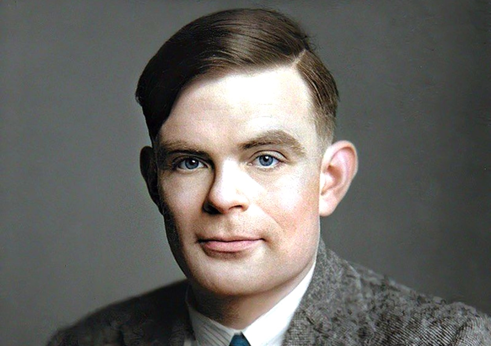

Alan Turing
Alan Turing was a British mathematician and computer scientist known for his foundational contributions to theoretical computer science and artificial intelligence,
as well as for his codebreaking work during World War II.
HISTORY
Alan Turing (1912-1954) was a British mathematician, logician, and computer scientist, known for his foundational work in theoretical computer science. During World War II, he played a crucial role in deciphering German codes at Bletchley Park, contributing significantly to the Allied victory. Turing proposed the concept of the Turing machine, laying the groundwork for modern computing, and introduced the Turing Test to evaluate machine intelligence. Despite his immense contributions, he faced persecution for his homosexuality, which ultimately led to his tragic death in 1954.
Achievement
Alan Turing, a pioneering British mathematician and logician, is best known for his foundational work in computer science and artificial intelligence. During World War II, he played a crucial role in decrypting German Enigma codes, significantly aiding the Allied victory. His 1936 paper on "computable numbers" introduced the concept of the Turing machine, a theoretical model of computation that remains central to computer science. Turing's ideas laid the groundwork for modern computing and influenced the development of algorithms and programming. Despite his achievements, he faced persecution for his sexuality, leading to his tragic death. Turing's legacy is celebrated today, and he is recognized as a key figure in the history of computing and LGBTQ+ Know More.
Life Event
Alan Turing, a British mathematician, logician, and computer scientist, had a life marked by significant contributions to multiple fields, as well as personal challenges. Here are key events in his life:
- 1912 : Born in Maida Vale, London, England, United Kingdom
- 1922 : Starts his elementary education
- 1926 : Goes to a boarding school at age of 13.
- 1928 : Manages to deduce Einstein's questioning of Newton's laws of motion from a text in which this never made explicit at the age of 16.
- 1930 : His "first love" Chritopher Morcom died from complications of bovine tuberculosis.
- 1934 : Completes his graduation from King's College, Cambridge
- 1935 : Get elected a fellow of King's.
- 1936 : Publishes his paper "On Computable Numbers, with an Application to the Entscheidungsproblem" in which he theorised his "Universal Computing Machine".
- 1941 : Proposes to a Hut 8 colleague Joan Clarke, a fellow mathematician and cryptanalyst,
- 1942 : Devised a technique termed Turingery for use against the Lorenz cipher messages produced by the Germans' new Geheimschreiber (secret writer) machine.
- 1946 : Get appointed as an Officer of the Order of the British Empire (OBE) by King George VI for his wartime services.
- 1950 : Addresses the problem of artificial intelligence, and proposed an experiment that became known as the Turing test, an attempt to define a standard for a machine to be called "intelligent".
- 1952 : Was charged for gross indecency as homosexual acts were criminal offence in UK.
- 1954 : Was found dead.
If you want more imformation click here
--- Written & Coded by Anish